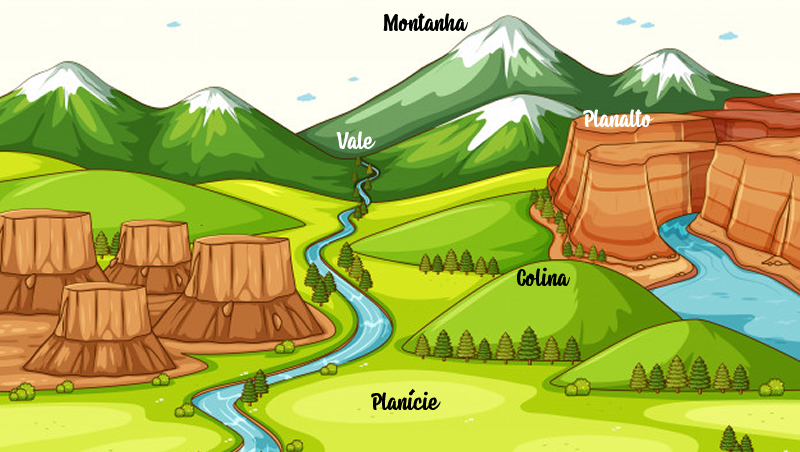
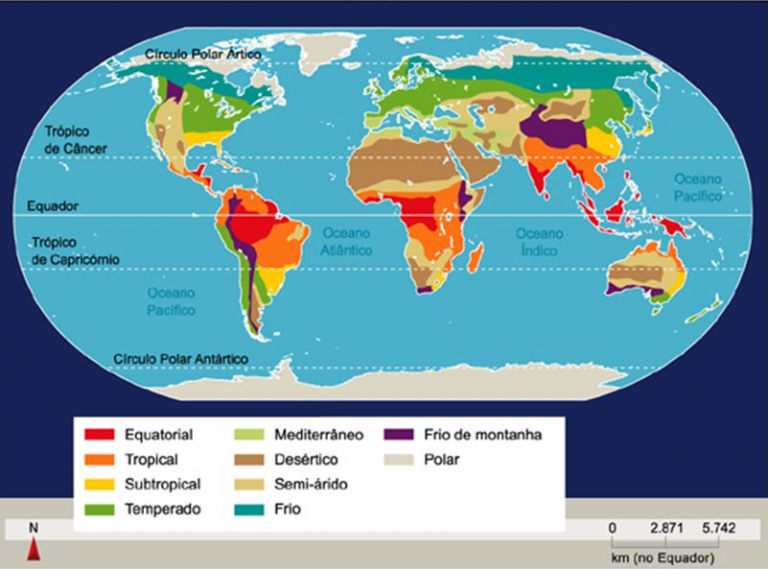
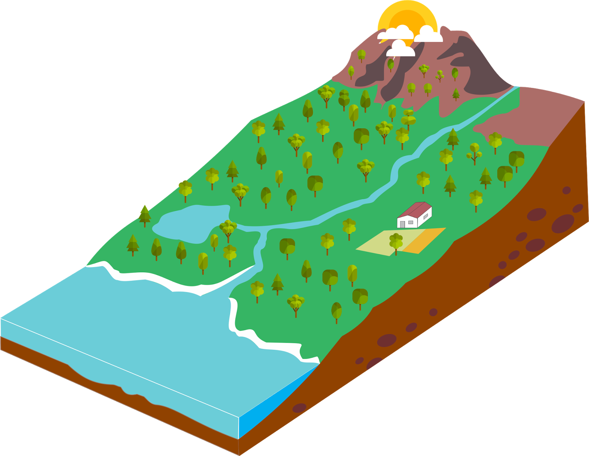

Os Países Baixos (Nederland em neerlandês) estão localizados no noroeste da Europa, entre as latitudes aproximadas de 51° e 53° N e longitudes 4° - 7° E e são limitados a norte e a oeste pelo Mar do Norte, a leste pela Alemanha e a sul pela Bélgica.
Um aspecto notável do país é o fato de ser extremamente plano. Cerca de metade do território fica a menos de 1 metro acima do nível do mar, e boa parte das terras está de fato abaixo do nível do mar - daí o nome "Países Baixos". O ponto mais alto, Vaalserberg, na fronteira sudeste, localiza-se a uma altitude de 321 m. Muitas áreas baixas estão protegidas por diques. Partes dos Países Baixos, inclusive quase toda a moderna província da Flevolândia, foram conquistadas ao mar. Essas áreas são conhecidas como pôlderes. Especialistas em geografia afirmam que os diques protegem os pôlderes da metade ocidental do país e impedem que as águas do Mar do Norte invadam o continente.
Relevo

A Holanda apresenta um relevo muito plano, com cerca de um quarto do seu território abaixo do nível do mar.
Se não fossem as obras de canalização e a construção de diques desde a Idade Média, boa parte do país, incluindo as regiões mais industrializadas, estariam debaixo d’água.
Clima

A Holanda apresenta a peculiaridade de estar entre dois importantes centros de ação: a baixa da Islândia e a alta dos Açores.
Assim, o país se coloca em uma posição onde massas de ar quentes e frias se chocam, causando instabilidade e nebulosidade. Estima-se que o país tenha menos de um mês de tempo aberto por ano, geralmente concentrados na primavera, enquanto outono e verões costumam ter os maiores índices pluviométricos.
Hidrografia

A drenagem das águas holandesa foi, em boa parte, desenhada pelo homem desde a Alta Idade Média através da construção de diques e canais.
A principal feição litorânea do país, o Golfo Zuiderzee, foi formado após uma inundação de áreas planas e pantanosas pelas águas do Mar do Norte, entre os anos 250 e 600 d.C. Anteriormente, a região se constituía como um estuário do Rio Reno.